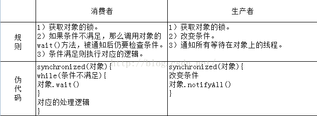

synchronize为多线程关键字是一种同步锁，它可以修饰以下几种对象：
代码块：被修饰的代码块被称为同步代码块，作用的范围是{}里面的代码，作用的对象是调用这个代码块的对象
方法：被修饰的方法称为同步方法，作用的范围是整个方法，作用的对象是调用这个方法的对象
类：作用的范围是synchronize后面括号里的部分，作用的对象是当前这个类
下面由一个栗子引入：
public class TestSynchronize {
//加了对象锁的方法
private synchronized void syn(){
//自定义sleep工具类
SleepTools.second(2);
System.out.println("syn is going..."+this.toString());
SleepTools.second(2);
System.out.println("syn ended..."+this.toString());
}
//调用了对象锁方法的线程1
private static class thread implements Runnable{
private TestSynchronize testSynchronize;
public thread(TestSynchronize testSynchronize){
this.testSynchronize = testSynchronize;
}
@Override
public void run() {
System.out.println("thread is running...");
testSynchronize.syn();
}
}
//调用了对象锁方法的线程2
private static class thread2 implements Runnable{
private TestSynchronize testSynchronize;
public thread2(TestSynchronize testSynchronize){
this.testSynchronize = testSynchronize;
}
@Override
public void run() {
System.out.println("thread2 is running...");
testSynchronize.syn();
}
}
public static void main(String[] args) {
TestSynchronize testSynchronize = new TestSynchronize();
thread thread = new thread(testSynchronize);
TestSynchronize testSynchronize2 = new TestSynchronize();
thread2 thread2 = new thread2(testSynchronize);
//thread2 thread2 = new thread2(testSynchronize2);
new Thread(thread).start();
new Thread(thread2).start();
}
}
/**
当两个线程都将testSynchronize传入时（即使用同一个对象调用加了对象锁的方法）运行结果如下：
thread is running...
thread2 is running...
syn is going...com.zl.synchronize.TestSynchronize@6b52350c
syn ended...com.zl.synchronize.TestSynchronize@6b52350c
syn is going...com.zl.synchronize.TestSynchronize@6b52350c
syn ended...com.zl.synchronize.TestSynchronize@6b52350c
*/
/**
当一个传入testSynchronize，另一个传入testSynchronize2时 运行结果如下：
thread is running...
thread2 is running...
syn is going...com.zl.synchronize.TestSynchronize@28835f5f
syn is going...com.zl.synchronize.TestSynchronize@47c48106
syn ended...com.zl.synchronize.TestSynchronize@28835f5f
syn ended...com.zl.synchronize.TestSynchronize@47c48106
*/结论：多个线程调用同一个对象的同步方法会阻塞，调用不同对象的同步方法不会阻塞
1) synchronized修饰的静态方法
public static synchronized void obj3() {
int i = 5;
while (i-- > 0) {
System.out.println(Thread.currentThread().getName() + " : " + i);
try {
Thread.sleep(500);
} catch (InterruptedException ie) {
}
}
}2) synchronized (test.class) ，锁的对象是test.class，即test类的锁。
public void obj1() {
synchronized (test.class) {
int i = 5;
while (i-- > 0) {
System.out.println(Thread.currentThread().getName() + " : " + i);
try {
Thread.sleep(500);
} catch (InterruptedException ie) {
}
}
}
}那么问题来了：在一个类中有两方法，分别用synchronized 修饰的静态方法（类锁）和非静态方法（对象锁）。多线程访问两个方法的时候，线程会不会阻塞？
答案是当类锁和对象锁同时存在时，多线程访问时不会阻塞，因为他们不是一个锁。
volatile 是一个类型修饰符。volatile 的作用是作为指令关键字，确保本条指令不会因编译器的优化而省略。
volatile的特性
保证了不同线程对这个变量进行操作时的可见性，即一个线程修改了某个变量的值，这新值对其他线程来说是立即可见的。（实现可见性）
禁止进行指令重排序。（实现有序性）
volatile 只能保证对单次读/写的原子性。i++ 这种操作不能保证原子性。
下面给出测试程序：
public class ThreadLocalDemo {
private static ThreadLocal<Integer> number = new ThreadLocal<Integer>(){
@Override
protected Integer initialValue() {
return 1;
}
};
private static class thread extends Thread{
@Override
public void run() {
Integer number = ThreadLocalDemo.number.get();
for (int i = 0; i < this.getId(); i++) {
number++;
}
System.out.println(this.getName()+"---"+this.getId()+"===="+number);
}
}
private static class thread2 extends Thread{
@Override
public void run() {
Integer number = ThreadLocalDemo.number.get();
for (int i = 0; i < this.getId(); i++) {
number++;
}
System.out.println(this.getName()+"---"+this.getId()+"===="+number);
}
}
public static void main(String[] args) {
new Thread(new thread()).start();
new Thread(new thread2()).start();
}
}
/**
Thread-0---12====13
Thread-2---14====15
*/ 为了支撑多线程之间的协作，JDK提供了两个非常重要的线程接口：等待wait()方法和通知notify()方法。 这两个方法并不是在Thread类中的，而是输出在Object类。这意味着任何对象都可以调用这两个方法。
等待/通知的经典范式

wait()方法和notify()方法究竟是如何工作的呢？
如果一个线程调用了object.wait()方法，那么它就会进入object对象的等待队列，这个队列中，可能会有多个线程，因为系统运行多个线程同时等待某一个对象，
当object.notify()方法被调用的时候，它就会从这个等待队列中随机选择一个线程，并进行唤醒。
除notity()方法外，Object对象还有一个类似的notifyAll()方法，它和notity方法的功能基本一致，不同的是，它会唤醒在这个等待队列中所有等待的线程，而不是随机一个。
object.wait()方法并不能随便调用。它必须包含在对象的synchronzied语句中，无论是wait()方法或者notity()方法都需要首先获得目标对象的一个监视器。
假设有T1和T2表示两个线程，T1在正确执行wait()方法前，必须获得object对象的监视器，而wait()方法执行之后会释放这个监视器。
这样做的目的是使其他等待在object对象上的线程不至于因为T1的休眠而全部无法正常执行。
线程T2在notity()方法调用前，也必须获得object对象的监视器。此时T1已经释放了这个监视器。所以T2可以顺利获得object对象的监视器。
接着，T2执行了notify()方法尝试唤醒一个等待线程，这里假设唤醒了T1，T1被唤醒后，要做的第一件事并不是执行后续代码，而是要尝试重新
获得object对象的监视器，而这个监视器也正是T1在wait()方法执行前所持有的那个。
如果暂时无法获得，则T1还必须等待这个监视器。当监视器顺利获得后，T1才可以在真正意义上继续执行。
这里要注意，只有当wait()和notify()被包含的synchronized语句执行完，才会释放监视器。
为了方便理解，简单的案例：
public class testWaitAndNotify {
final static Object object = new Object();
public static class T1 extends Thread {
public void run() {
synchronized (object) {
try {
System.out.println(System.currentTimeMillis() + ":T1 start! ");
System.out.println(System.currentTimeMillis() + ":T1 wait for object");
object.wait();
} catch (InterruptedException e) {
e.printStackTrace();
}
System.out.println(System.currentTimeMillis() + ":T1 end! ");
}
}
}
public static class T2 extends Thread {
public void run() {
synchronized (object) {
try {
System.out.println(System.currentTimeMillis() + ":T2 start! notify one thread");
object.notify();
sleep(5000);
System.out.println(System.currentTimeMillis() + ":T2 end! ");
} catch (InterruptedException e) {
e.printStackTrace();
}
}
}
}
public static void main(String[] args) {
Thread t1 = new T1();
Thread t2 = new T2();
t1.start();
t2.start();
}
}
/**
1571039516250:T1 start!
1571039516250:T1 wait for object
1571039516251:T2 start! notify one thread
1571039521251:T2 end!
1571039521251:T1 end!
*/由于经典的等待/通知范式无法做到超时等待，也就是说，当消费者在获得锁后，如果条件不满足，等待生产者改变条件之前会一直处于等待状态，在一些实际应用中，会浪费资源，降低运行效率。
伪代码如下所示：
//假设超时时间是mills，则等待持续时间是remaining,超时时间是future
long future = System.currentTimeMillis() + mills;
long remaining = mills;
synchronized (lock) {
while (!condition && remaining > 0) {
wait(remaining);
remaining = future - System.currentTimeMillis();
}
//处理代码
}join在线程里面意味着“插队”，哪个线程调用join代表哪个线程插队先执行——但是插谁的队是有讲究了，不是说你可以插到队头去做第一个吃螃蟹的人，而是插到在当前运行线程的前面，比如系统目前运行线程A，在线程A里面调用了线程B.join方法，则接下来线程B会抢先在线程A面前执行，等到线程B全部执行完后才继续执行线程A。
话不多说上代码
public class TestJoin {
private static class thread extends Thread{
private Thread t;
//接收一个插队线程
public thread(Thread t){
this.t = t;
}
@Override
public void run() {
try {
//调用插队线程的join方法
t.join();
} catch (InterruptedException e) {
e.printStackTrace();
}
System.out.println(getName()+"---执行完毕！");
}
}
public static void main(String[] args) throws InterruptedException {
//获取当前线程作为前一个线程
Thread pre = Thread.currentThread();
//创建五个线程
for (int i = 0; i < 5; i++) {
Thread thread = new Thread(new thread(pre),String.valueOf(i));
//启动线程
thread.start();
//重置前一个线程
pre = thread;
}
System.out.println(System.currentTimeMillis());
//让主线程睡眠2s
Thread.currentThread().sleep(2000);
System.out.println(System.currentTimeMillis());
System.out.println(Thread.currentThread().getName()+"---执行完毕");
}
}
/**
1571061168064
1571061170065
main---执行完毕
Thread-0---执行完毕！
Thread-1---执行完毕！
Thread-2---执行完毕！
Thread-3---执行完毕！
Thread-4---执行完毕！
*/